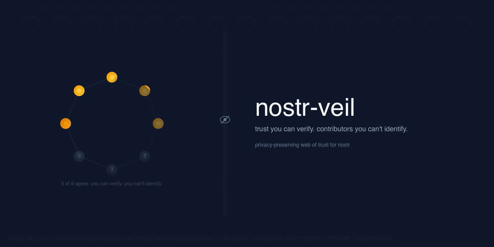

User pubkey
Accounts, onboarding candidates, moderators, vendors with a Nostr identity, and pubkey-backed sources.
aggregateContributions
nostr-veil lets a public circle publish a verifiable NIP-85 trust signal while hiding which circle members contributed. Start with the thing being scored, then open the worked example for the exact implementation path.

This is the first design decision. User, event, addressable event, and external identifier assertions all use the same proof layer, but they bind the score to different Nostr subjects.
Accounts, onboarding candidates, moderators, vendors with a Nostr identity, and pubkey-backed sources.
aggregateContributions
Claims, reports, announcements, grant proposals, credentials, and other single-event artefacts.
aggregateEventContributions
Long-form notes, research artefacts, lists, labeler profiles, moderation feeds, and NIP-33 records.
aggregateAddressableContributions
Relays, services, domains, NIP-05 names, packages, releases, maintainers, and marketplace identities.
aggregateIdentifierContributions
nostr-veil gives applications a privacy-preserving threshold signal. The surrounding workflow decides what evidence, policy, expiry, and enforcement make that signal safe to use.
verifyProof(event, { requireProofVersion: 'v2' }) for new subject-bound workflows.The individual examples cover subject tags, helper calls, metric meaning, v2 verification, operational requirements, and policy choices. The TypeScript script exercises the same shapes as a runnable cross-check.
Supported-today profiles use the current NIP-85 and proof APIs. Future profiles can use nostr-veil as the proof layer, but need a companion credential or admission protocol before the full workflow is complete.
Trust signals about accounts and candidates without exposing the contributors behind the score.
Publish a threshold-backed signal about an account for moderation, trust, or abuse-risk workflows.
An existing circle can vouch for a candidate account without naming the members who backed them.
Reviewer circles can score sources, claims, articles, and research artefacts while protecting reviewer identity.
A trusted circle can corroborate a source or document trail without publishing every person who vouched.
Score a specific note, report, announcement, or claim with a verifiable reviewer threshold.
Let a reviewer circle score an addressable artefact without exposing reviewers to authors or sponsors.
Portable reputation for services, domains, relays, lists, packages, releases, and maintainers.
Score relays, upload services, bots, label APIs, and other endpoints as external identifiers.
Score identity domains, NIP-05 names, upload providers, payment endpoints, or other service identifiers.
Compare lists, labelers, moderation feeds, and filter providers without publishing a reviewer graph.
Security reviewers can score packages, releases, commits, or maintainers without exposing every reviewer.
Trust circles can publish portable signals without revealing every customer, reviewer, or reporter.
Publish counterparty reputation for sellers, buyers, vendors, and marketplaces.
Anonymous review can reduce pressure on individual reviewers while keeping the aggregate verifiable.
Count distinct contributors across several scoped circles without double-counting overlapping members.
Reviewer circles can score proposals, milestones, or deliverables without exposing individual reviewers.
These are credible extensions of the proof layer, but the full workflow needs a companion protocol.
A circle can score a credential or attestation event today; a full profile needs credential semantics.
A circle can publish a vouch assertion today; full anonymous admission needs an access handshake.